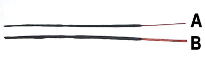

その場所の香りで、訪れた先の印象というものはずいぶん変わります。
カビ臭かったり、ペットの匂いで充満した部屋は、やはり相手に良い印象を与えるものではありません。
そこで住んでいる人にとってはその臭さも当たり前になってしまっていて、全くと言っていいほど気にせず、相手が不快に思っている事に気付かない事もよくあります。
インド香に限らずですが、お香は即効性のあるルームフレグランスの役目を果たします。
それを上手に利用して、来客時などに相手に好印象を与えるアイテムとして大いに活用して欲しいものです。
お香は煙と一緒に香りが出るものですから、お客様がおいでになる前に焚くのが基本ですが、煙が嫌な方も中にはいらっしゃいますし、人によって香りに好き嫌いがありますので、やはり利用したいのは残り香の優しいものだと思います。
フローラル系やグリーン系は女性に人気がありますが、好き嫌いがはっきりと分かれる傾向がありますので、相手の好みがよく判っている時だけにした方がいいようです。
日本人はどちらかというと、柑橘系やウッド系が落ち着く方が多い様なので、相手の事をよく知らない場合や不特定多数の時はこれらのうちのどれかを選んだほうが無難のようです。
また、昔から日本人は白檀系に馴染みが深いせいか、ルームフレグランス系が嫌いな方でもその系統の香りがしているのは全く気にならないようです。
さて、残り香を上手に利用するにはそのお香の燃え終わる時間を知っておいた方が良いのですが、よくHP上でみると、燃焼時間は「約４０分位」です。
インド香は一本一本、手作りのものがほとんどなので同じ箱の中に入っているものでも、芯や軸の太さに多少の差があります。
その太さの差に笑っちゃう方もよくいらっしゃるでしょうが、大体1〜2ミリくらいの差です。
写真はオーロビンド香ですが、Aは竹軸が幅1ミリ、火薬本体部分が2ミリから3ミリあります。
一方Bは竹軸約3ミリ、火薬本体部分が3.5ミリから4ミリです。
